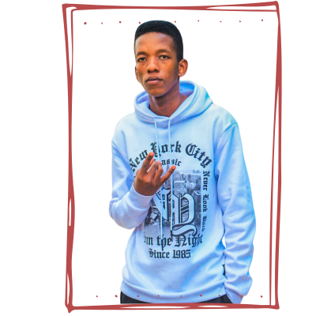

Hello there! I'm JayTee, an IT professional and a passionate second-year student in the Diploma of Information and Communication Technology at Cape Peninsula University of Technology.
During my last year, I developed a solid foundation in programming through my studies in HTML, CSS, and JavaScript. These languages not only gave me the skills for web development but also sparked my love for building things that matter.
Besides my coding abilities, I've recently started delving into Java, a language widely used across applications. This new journey has introduced me to object-oriented programming, pushing my problem-solving skills further.
In addition to my academic interests, I have a passion for exploring the digital realm. I love discovering emerging technologies and trends that could shape our future. Being part of the tech world means embracing change and always seeking growth.
I love art. I am driven by a deep desire to build something great for people like me—people who don’t always have access or opportunity, who might not have the right tools, but still want to create and belong. I want to share my passion, my authentic self—the real JayTee Xaba—with everyone who knows the struggle. Because, honestly, you can’t outwork someone who is in love with tech the way I am.
For me, technology is more than code: it’s my way to process pain and turn setbacks into something beautiful. No one truly knows how much I’ve given up to get here. All the things I’ve lost, I’ve channeled into this journey—into every line of code, every late-night project, every risk.
This isn’t just about skills or a career. It’s about turning struggle into innovation, and making sure that anyone who feels left out can look at my work and say: “If he can, I can too.”
I’m not done yet. I’m only getting started.